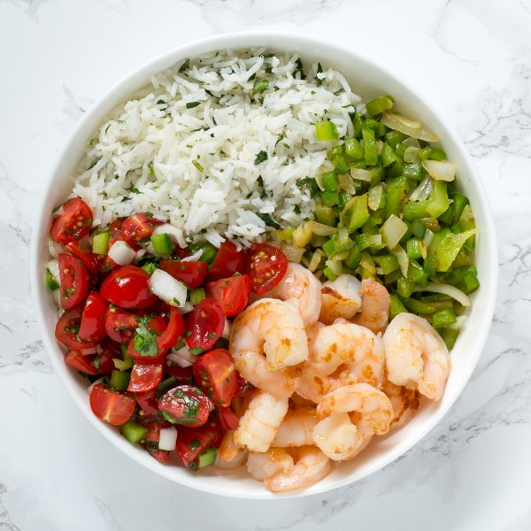

Shrimp Burrito Bowl with Cilantro-Lime Rice & Pico de Gallo

Total Time
45 min
Nutrition (per serving)
408.8 kcalCalories
29.1 gProtein
52.4 gCarbs
9.4 gFat
Full nutrition table
| Calories | 408.8 kcal |
| Total fat | 9.4 g |
| Saturated fat | 6.5 g |
| Trans fat | 0 g |
| Cholesterol | 214.3 mg |
| Sodium | 985.2 mg |
| Carbohydrates | 52.4 g |
| Fiber | 4.6 g |
| Sugars | 7.2 g |
| Protein | 29.1 g |
| Potassium | 872.4 mg |
| Calcium | 148.7 mg |
| Iron | 3.4 mg |
| Vitamin A | 1717.8 IU |
| Vitamin C | 89.6 mg |
| Vitamin D | 3.4 IU |
Cookware
Ingredients
- 1 cupbasmati rice
- 1 small bunchcilantro
- 2 pintsgrape tomatoes
- 2green bell peppers
- 2jalapeño peppers
- 2limes
- 1 ½ lbraw peeled shrimp, fresh or frozen
- 1 mediumyellow onion
- salt
- virgin coconut oil
Steps
- Using a strainer or colander, rinse the rice under cold, running water, then drain and transfer to a small saucepan. Add water and bring the mixture to a boil over high heat.1 cup basmati rice
2 cups water - Wash and dry the fresh produce.2 pints grape tomatoes
2 green bell peppers
2 jalapeño peppers
2 limes
1 small bunch cilantro - Once the liquid comes to a boil, stir the mixture, cover the saucepan, and reduce the heat to low. Cook the rice until the liquid is fully absorbed, 15 to 18 minutes. Once done, remove the rice from the heat and let it stand, still covered, for 5 minutes.
- Quarter the grape tomatoes and transfer to a medium bowl (that will be used for the salsa).
- Quarter the jalapeño peppers lengthwise; remove and discard the stem, seeds, and membranes. Finely dice the peppers and add to the salsa bowl.
- Trim off and discard the ends of the onion and remove the outer layer; small dice the onion into ¼-inch pieces. Transfer one ½ to the salsa bowl and the other ½ to a separate medium bowl.1 medium yellow onion
- Quarter the bell peppers lengthwise; remove and discard the stem, seeds, and membranes. Small dice the peppers into ¼-inch pieces. Add to the medium bowl with the onion.
- Juice the limes into a small bowl; add about ½ of the juice to the salsa bowl and save the rest for the rice.
- Using a knife, shave the cilantro leaves off the stems at a downward angle, working away from your body; discard the stems and finely chop the leaves. Add about ½ of the cilantro to the salsa bowl and add the rest to the bowl with the remaining lime juice.
- Season the salsa with salt; stir to combine and set aside.½ tsp salt
- Add coconut oil to a nonstick skillet and preheat over medium heat.1 tbsp virgin coconut oil
- If using frozen shrimp, place them in a colander and run under cold water until there are no more ice chunks. Then, lay them out on a clean towel or paper towels and pat dry. If using fresh shrimp, skip the first step.1 ½ lb raw peeled shrimp, fresh or frozen
- Once the skillet is hot, add the shrimp and cook until they are opaque, 1 to 2 minutes per side. Once done, transfer to a bowl and set aside to cool.
- Once the shrimp has been transferred, add more coconut oil to the skillet followed by the onion and bell peppers. Cook, stirring frequently, until the vegetables are browned and softened, 2 to 3 minutes.1 tbsp virgin coconut oil
- Uncover the rice and fluff with a fork. Add the remaining lime juice and cilantro to the rice and stir to combine.
- To serve, arrange the rice, veggie mixture, shrimp, and salsa in a bowl. Enjoy!